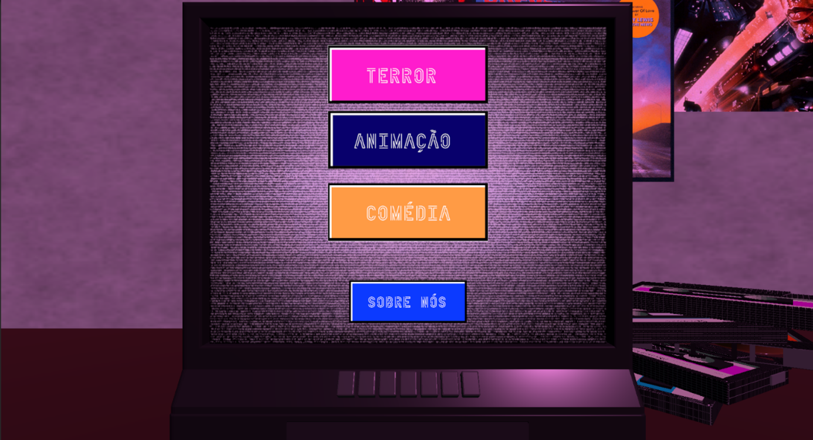
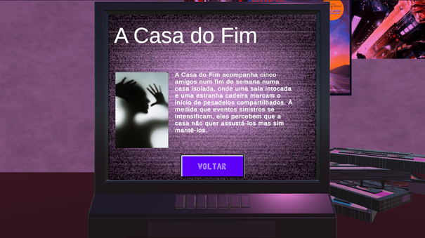
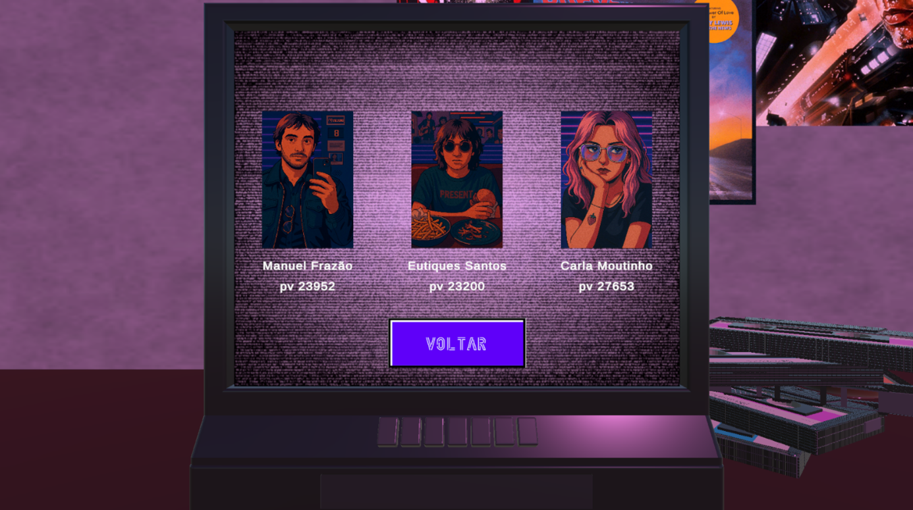
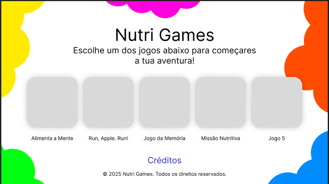

Quiosque Interativo Filmes
A aplicação surgiu de um brainstorming que inicialmente pensou em lojas de vinis e roupas, mas decidiu focar na amostra de cassetes VHS, inspirada nas antigas lojas Blockbuster dos anos 90.
O objetivo é criar uma experiência interativa, com animações e sons, permitindo ao usuário escolher filmes de três categorias (terror, comédia e animação) e visualizar informações como título e sinopse.




Aplicação Educacional e Lúdica
O objetivo do projeto é criar uma aplicação interativa voltada para crianças do ensino primário, com foco na educação alimentar e nutrição saudável.
Inclui jogos educativos e recursos multimídia adaptados para captar a atenção do público infantil. São apresentados conceitos como os grupos alimentares com personagens e histórias adequadas à idade.

Minhas Telas
Abaixo podes ver algumas telas que pintei, onde apresento alguma da minha indentidade, creatividade. Cada tela representa uma parte importante da minha historia de vida e da minha essencia.